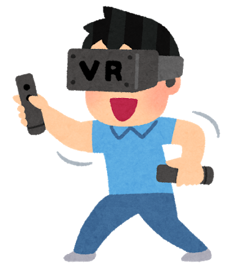
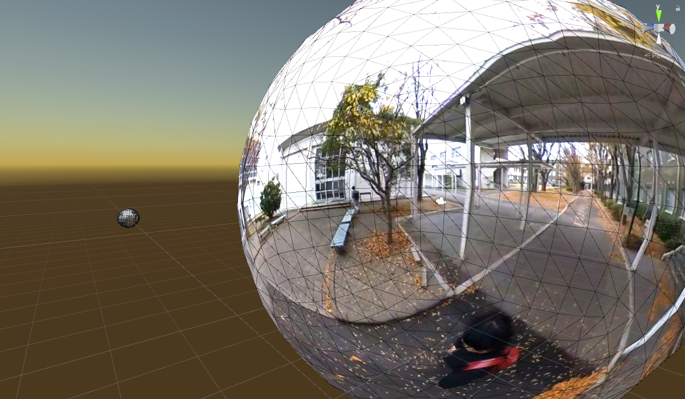
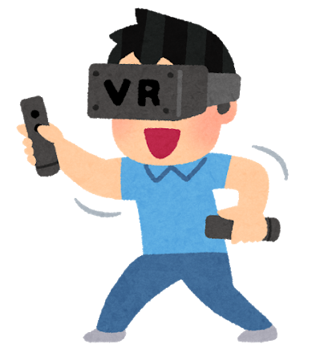
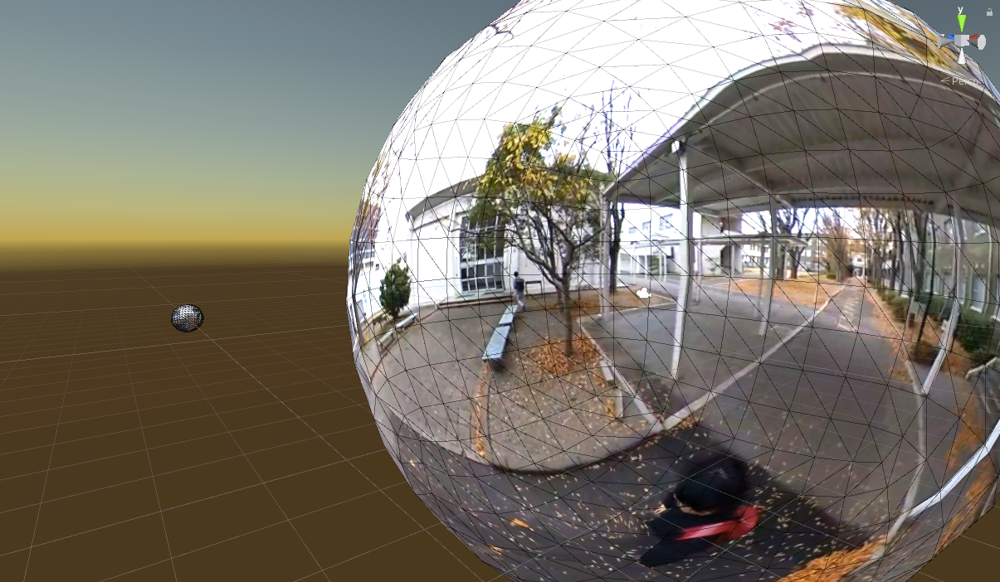

調査・勉強
| UnityでVR StreetViewを実装したときの話  |
ColmapとUnityとOculus Quest 2を使って、VRコンテンツを作った時の話です。少し長いですが、簡単にまとめてみました。 | UnityでStreetViewを実装して、WebGLにBuildしたときの話  |
慣れないUnityと格闘した時の話です。Product「全天球画像とUnityでStreetViewを実装」に対応しています。 |
|---|
| UnityでVR StreetViewを実装したときの話  |
ColmapとUnityとOculus Quest 2を使って、VRコンテンツを作った時の話です。少し長いですが、簡単にまとめてみました。 | UnityでStreetViewを実装して、WebGLにBuildしたときの話  |
慣れないUnityと格闘した時の話です。Product「全天球画像とUnityでStreetViewを実装」に対応しています。 |
|---|